01ภาพรวม
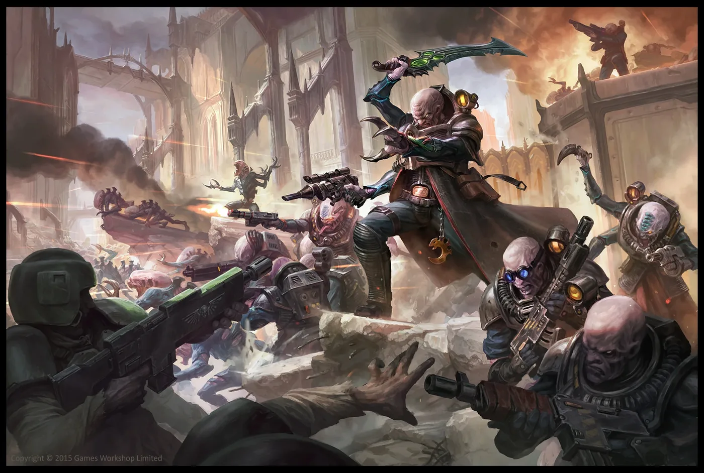
ลัทธิลับในหมู่มนุษย์ที่บูชา 'จักรพรรดิสี่แขน' — ไม่รู้เลยว่ากำลังเรียก Tyranids มากินตัวเอง
02ต้นกำเนิด
Genestealer ตัวหนึ่งแพร่เชื้อพันธุกรรมใส่มนุษย์ ลูกหลานของผู้ติดเชื้อกลายเป็นลูกผสมที่ยิ่งเหมือน Genestealer มากขึ้นในแต่ละรุ่น จนถึงรุ่นที่สี่ที่เกือบเหมือนมนุษย์ทั่วไป ทุกคนเชื่อมจิตกับ Patriarch Genestealer ตัวแรก
03เนื้อเรื่องเจาะลึก
ศาสนาที่หลอกตัวเอง
สมาชิกลัทธิเชื่อว่า "เทพจากดวงดาว" จะมาปลดปล่อยพวกเขาจากความทุกข์ในจักรวรรดิ เมื่อ Tyranids มาถึงจริง พวกเขาก็ถูกเขมือบเช่นเดียวกับทุกคน — โศกนาฏกรรมที่ Genestealer Cults ไม่เคยรู้ตัว
04ยุค 30K — ในยุค Great Crusade และ Horus Heresy
ยุค 30K มีบันทึกการพบ Genestealer อยู่บ้าง แต่ภัยจากลัทธิแทรกซึมกลายเป็นปัญหาใหญ่ของจักรวรรดิในยุค 40K
ดูภาพรวมยุค 30K ทั้งหมดที่ เนื้อเรื่องยุค 30K และความต่างของสองยุคที่ เปรียบเทียบ 30K vs 40K
05นิสัยและวัฒนธรรม
- บูชา 'Four-Armed Emperor' ที่พวกเขาคิดว่าเป็นเทพผู้ช่วยให้รอด
- แทรกซึมเข้าไปทำงานในเหมืองและกองทัพของจักรวรรดิ
- รอ 'Day of Ascension' — วันลุกขึ้นก่อกบฏ
06จุดที่น่าสนใจ
- การก่อกบฏส่งสัญญาณเรียก Hive Fleet — และทุกคนในลัทธิก็ถูกกินพร้อมดาว
07ความสามารถพิเศษ
สิ่งที่ทำให้ Genestealer Cults แตกต่างจากทัพอื่น — ทั้งพลังที่ติดตัวมาทั้งเผ่า/ทัพ และความสามารถของบุคคลสำคัญ
ของทั้งเผ่า/ทัพ
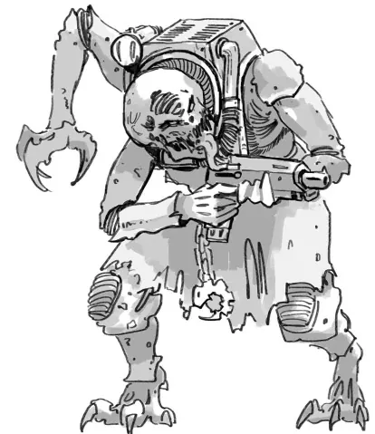
จูบของ Genestealer
Genestealer ฝังพันธุกรรมลงในร่างมนุษย์ เหยื่อกลับไปใช้ชีวิตปกติแต่ลูกที่เกิดมาจะเป็นลูกผสม ผ่านไปสี่รุ่นลูกหลานจะดูเหมือนมนุษย์จนแยกไม่ออก และรุ่นต่อไปจะกลายเป็น Genestealer แท้อีกครั้ง
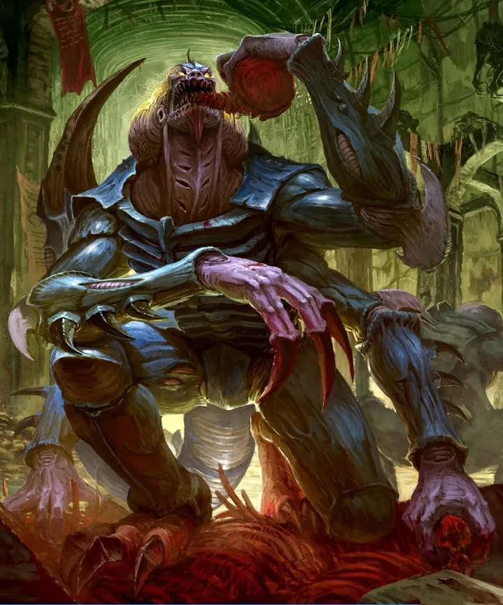
จิตเชื่อมโยง (Broodmind)
สมาชิกทุกคนเชื่อมจิตกับ Patriarch รู้สึกรักและภักดีต่อ "ครอบครัว" อย่างไม่มีเงื่อนไข และอยู่ภายใต้การนำโดยไม่รู้ตัว
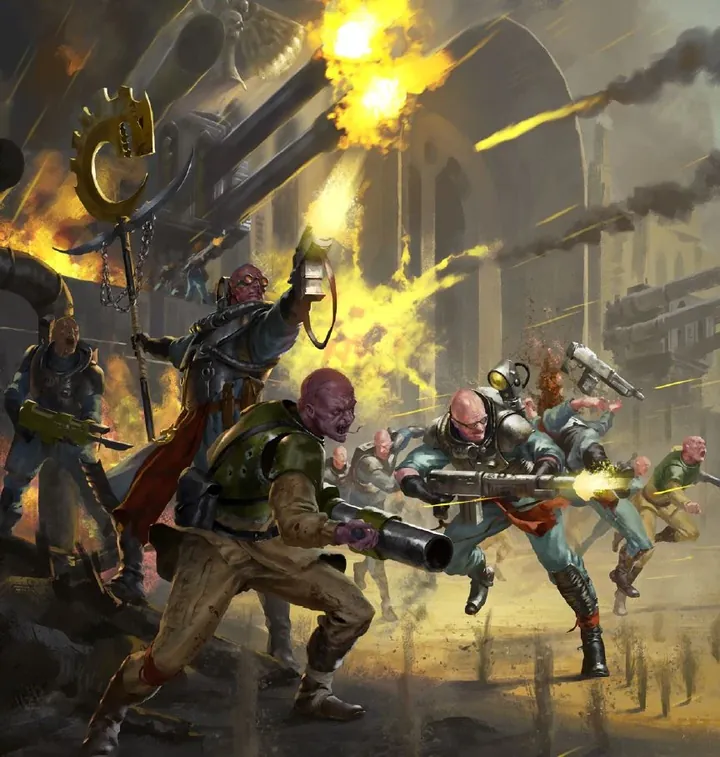
ลุกฮือทั้งดาว (Day of Ascension)
ลัทธิซ่อนตัวหลายชั่วคน แทรกซึมในรัฐบาล กองทัพ และโรงงาน เมื่อพร้อมจะลุกฮือพร้อมกัน ยึดดาวจากข้างใน แล้วส่งสัญญาณเรียกฝูง Tyranids มา "ช่วย"
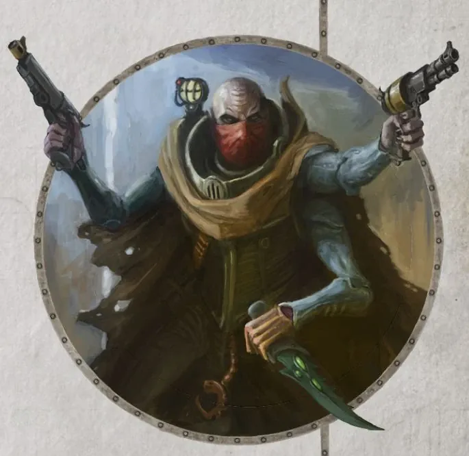
ซุ่มโจมตีจากอุโมงค์
สมาชิกที่เป็นคนงานเหมืองขุดอุโมงค์ใต้ดินทั่วเมือง โผล่ขึ้นมาโจมตีจากทุกทิศแล้วหายไปอีกครั้ง
ของบุคคลสำคัญ
Patriarch
บิดาของลัทธิGenestealer ตัวแรกที่มาถึงดาว มีพลังจิตสูงมาก ควบคุมทุกคนในลัทธิเหมือนเป็นเทพ
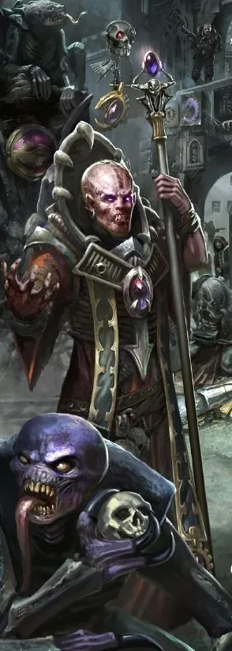
Magus
ผู้นำทางจิตวิญญาณลูกผสมที่ดูเหมือนมนุษย์ที่สุด มีพลังสะกดจิต ทำหน้าที่เป็นหน้าเป็นตาของลัทธิในสังคมมนุษย์
08หน่วยและบทบาทในกองทัพ
Genestealer Cults คือลัทธิลับของมนุษย์ลูกผสมที่ถูก Genestealer ฝังพันธุกรรม ทุกคนบูชา "Star Children" (Tyranids) โดยไม่รู้ว่ากำลังรอให้ฝูงมาเขมือบดาวตัวเอง ลัทธิมีทั้งหมอ นักบวช และช่างเหมือนสังคมปกติ
Patriarch
แพทริอาร์กGenestealer ตัวแรกที่ก่อตั้งลัทธิ เป็นหัวใจจิตของทุกคน
Magus
เมกัสผู้ใช้พลังจิตหน้าตาเหมือนมนุษย์ที่สุด ทำหน้าที่เป็นผู้นำทางจิตวิญญาณและควบคุมจิตใจ
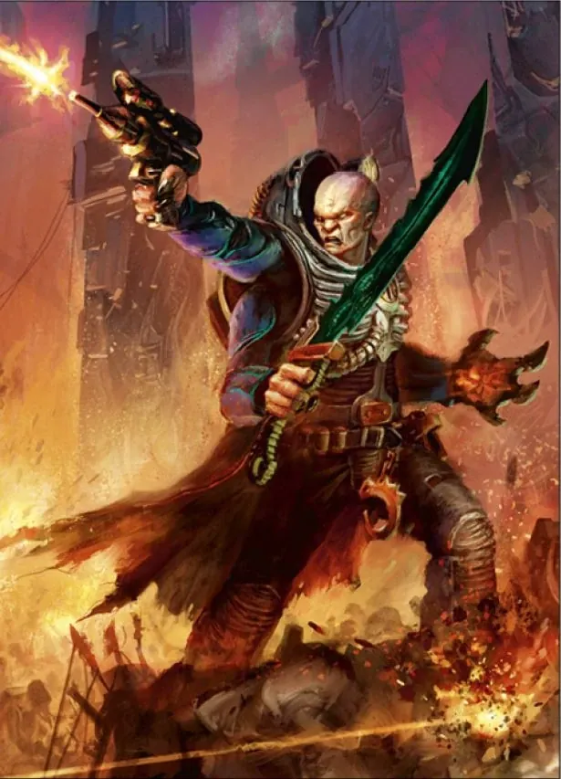
Primus
ไพรมัสแม่ทัพของลัทธิ วางแผนการลุกฮือ (Day of Ascension)
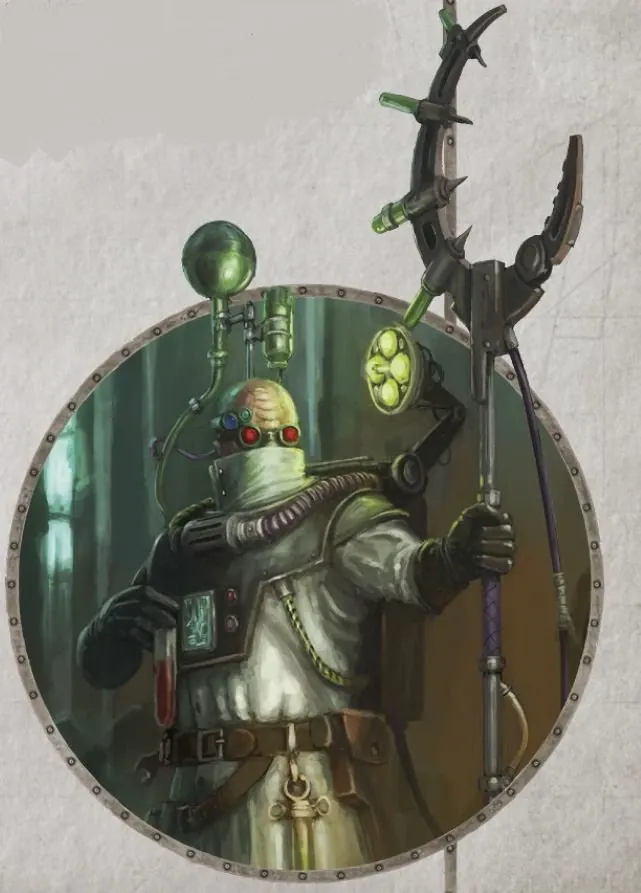
Biophagus
ไบโอฟากัส"หมอ" ของลัทธิ นักพันธุศาสตร์ที่ดูแลการผสมพันธุ์และดัดแปลงร่างกาย สร้างสัตว์ Aberrant ที่กล้ามโตผิดปกติ
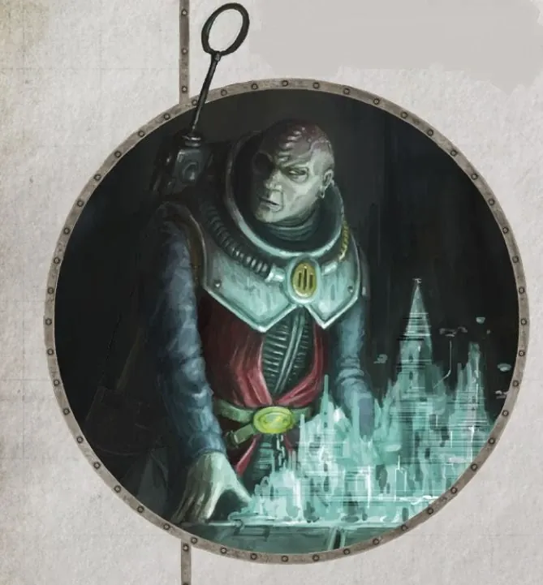
Nexos
เน็กซอสนักวางแผนและนักวิเคราะห์ข้อมูล ประสานงานเครือข่ายลัทธิทั่วดาว
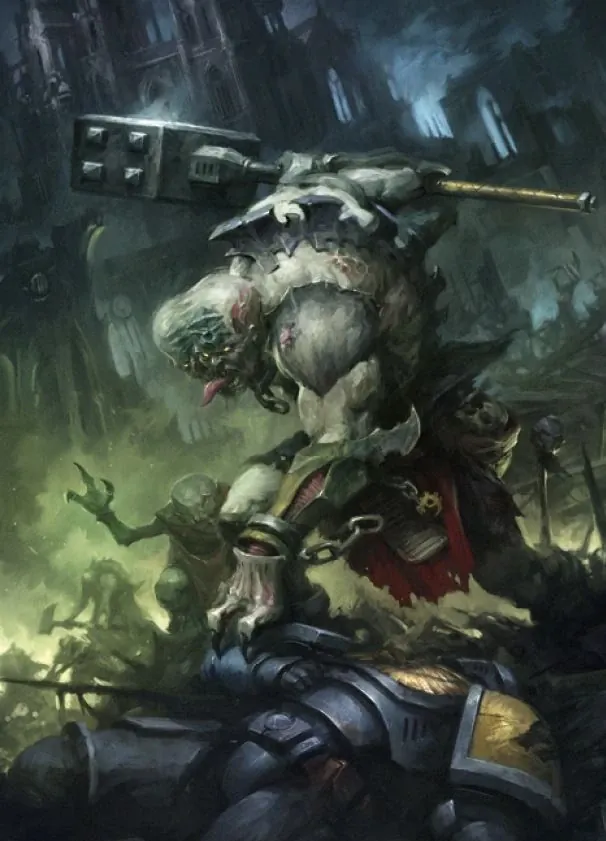
Abominant
อะโบมิแนนต์ผู้ถูกเลือกที่กลายพันธุ์ใหญ่โต ได้รับการบูชาเหมือนผู้วิเศษ
Acolyte / Neophyte Hybrids
ลูกผสมลูกผสมรุ่นแรกที่ยังมีลักษณะเอเลียน (Acolyte) และรุ่นหลังที่ดูเหมือนมนุษย์ (Neophyte) ใช้อุปกรณ์ขุดเหมืองเป็นอาวุธ
Kelermorph / Sanctus
เคเลอร์มอร์ฟ / แซงก์ตัสKelermorph คือมือปืนสามแขนในตำนาน ส่วน Sanctus คือนักฆ่าที่ซ่อนตัวลอบสังหาร
09วีรกรรมและเหตุการณ์สำคัญ
Vigilus
ลัทธิ Pauper Princes ลุกฮือระหว่างการบุกของ Orks
ลุกฮือทั่วจักรวรรดิ
ลัทธิหลายร้อยแห่งเริ่มกบฏในความโกลาหลหลัง Great Rift
10ตัวละครสำคัญ

Patriarch
ผู้นำจิตGenestealer ตัวแรกของลัทธิ
11ยุค 40K — สหัสวรรษที่ 41
ยุค 40K ลัทธิแพร่กระจายในดาวเหมืองของจักรวรรดิ
12เนื้อเรื่องล่าสุด (Era Indomitus / M42)
หลังการเกิด Great Rift ลัทธิจำนวนมากคิดว่าวัน Ascension มาถึงแล้วและลุกฮือพร้อมกัน
หลังการเกิด Great Rift ปฏิทินของจักรวรรดิคลาดเคลื่อน เหตุการณ์ยุคปัจจุบันจึงมักระบุเพียง 'M42' ไม่มีปีที่แน่นอน
13แกลเลอรี
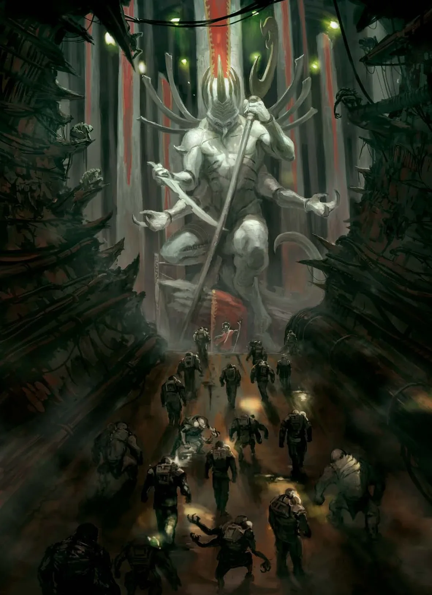